Microsoft Agent Framework 1.0 i MCP w praktyce

| Semantic Kernel | AutoGen | Microsoft Agent Framework | |
|---|---|---|---|
| Rola | SDK do orkiestracji AI dla systemów enterprise | Framework badawczy do systemów multi-agent | Ujednolicona platforma agentowa klasy enterprise |
| Fundament | Skills, pluginy, workflow i integracje | Współpracujące agenty i konwersacyjna orkiestracja | Połączenie orkiestracji enterprise i architektury multi-agent |
| Inter operacyjność |
Pluginy, konektory oraz wsparcie dla MCP A2A OpenAPI | Elastyczna integracja agentów i narzędzi, rozwijające się wsparcie protokołów | Wbudowane konektory, natywne wsparcie dla MCP A2A OpenAPI |
| Pamięć | Abstrakcja pamięci i integracje z bazami wektorowymi | Pamięć konwersacji oraz zewnętrzne magazyny pamięci | Trwała, adaptacyjna i wielowarstwowa pamięć agentów |
| Orkiestracja | Deterministyczna + dynamiczna (workflow, planners, process framework) | Dynamiczna orkiestracja LLM (debata, reflection, group chat, facilitator/worker) | Deterministyczna + dynamiczna orkiestracja agentów i workflow |
| Gotowość enterprise |
Telemetria, observability, compliance, integracja z Azure | Mała, stworzona do badań | Observability, approvals, CI/CD, durable execution, hydration |
| Grupa docelowa |
Zespoły enterprise budujące aplikacje AI | Research i eksperymenty z agentami AI | Zespoły budujące produkcyjne systemy agentowe |
| Ewolucja | Fundament orkiestracji enterprise AI | Fundament architektur multi-agent | Połączenie Semantic Kernel + AutoGen w jeden ekosystem |
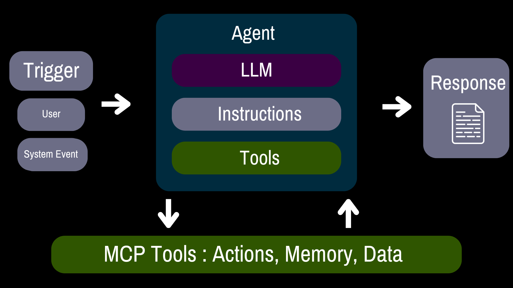
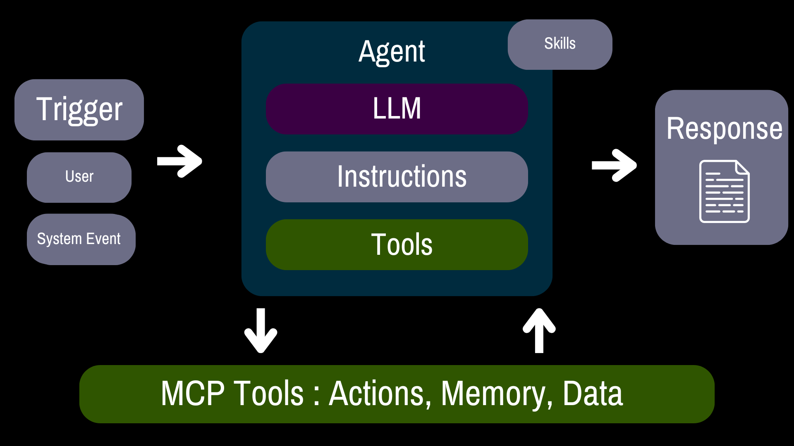
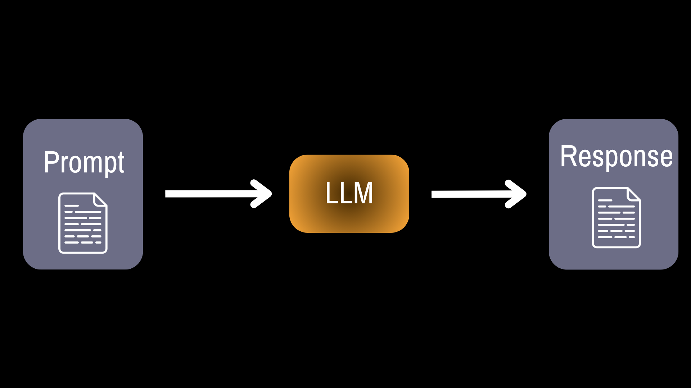
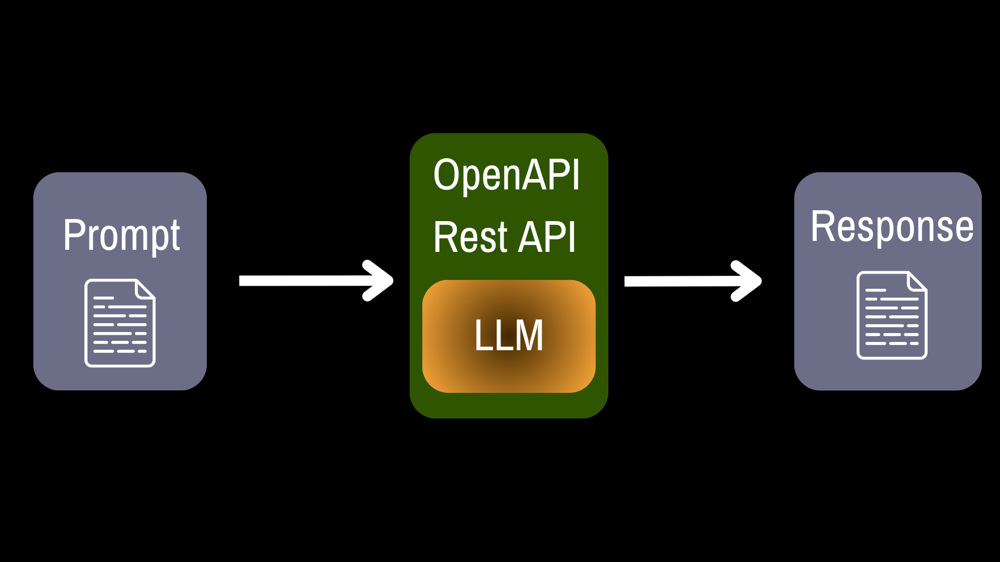
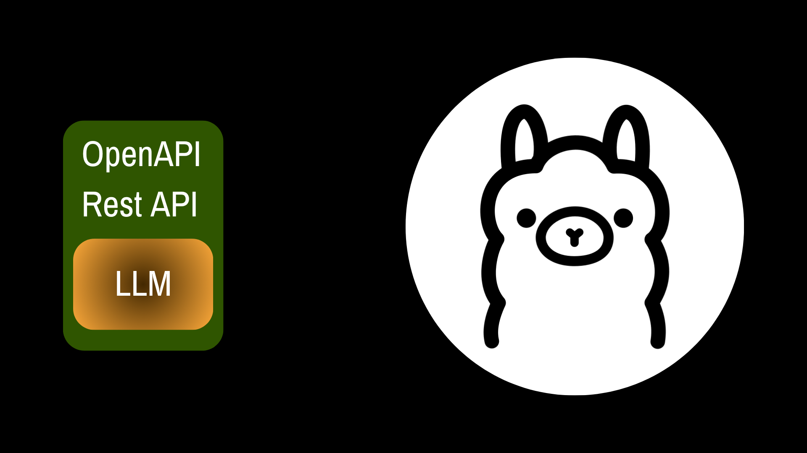
using Microsoft.Extensions.AI;
using OllamaSharp;
// Klient Ollama — domyślnie http://localhost:11434
var ollama = new OllamaApiClient("http://localhost:11434");
// IChatClient z Microsoft.Extensions.AI
IChatClient client = ollama
.AsChatClient("qwen3:8b");
var response = await client.GetResponseAsync(
"Co to jest Model Context Protocol?"
);
Console.WriteLine(response.Text);
<PackageReference Include="Microsoft.Extensions.AI"
Version="10.5.2" />
<PackageReference Include="OllamaSharp"
Version="5.*" />
using Microsoft.Extensions.AI;
using OllamaSharp;
IChatClient client = new OllamaApiClient("http://localhost:11434")
.AsChatClient("qwen3:8b");
// Historia czatu — lista wiadomości
var history = new List<ChatMessage>
{
new(ChatRole.System, "Jesteś pomocnym asystentem .NET.")
};
while (true)
{
Console.Write("\nTy: ");
var input = Console.ReadLine();
if (string.IsNullOrWhiteSpace(input)) break;
history.Add(new(ChatRole.User, input));
// Przekazujemy całą historię — model "pamięta" kontekst
var response = await client.GetResponseAsync(history);
Console.WriteLine($"\nModel: {response.Text}");
// Dodajemy odpowiedź modelu do historii
history.Add(response.Message);
}
await foreach (var update in
client.GetStreamingResponseAsync(history))
{
Console.Write(update.Text);
}
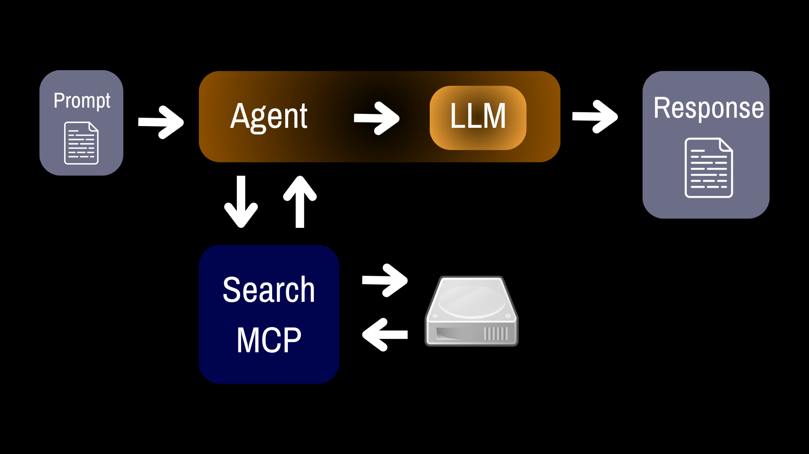
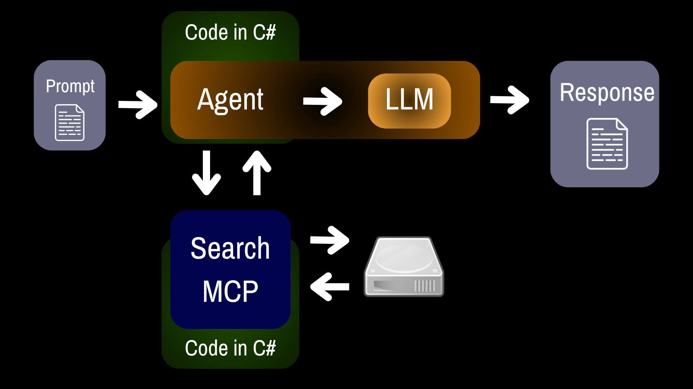
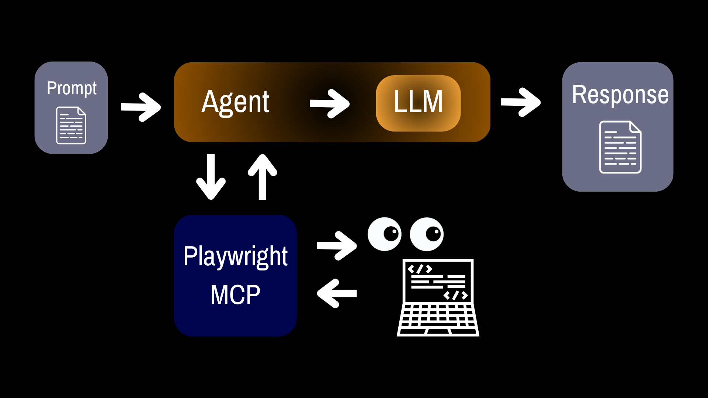
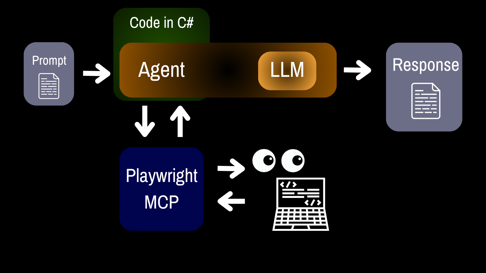
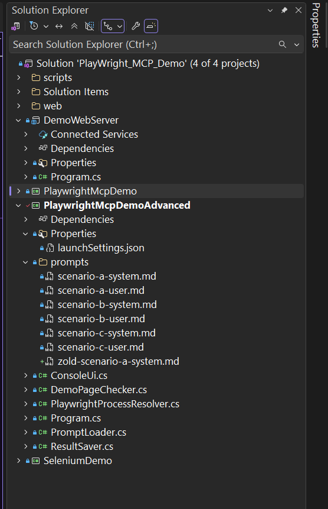
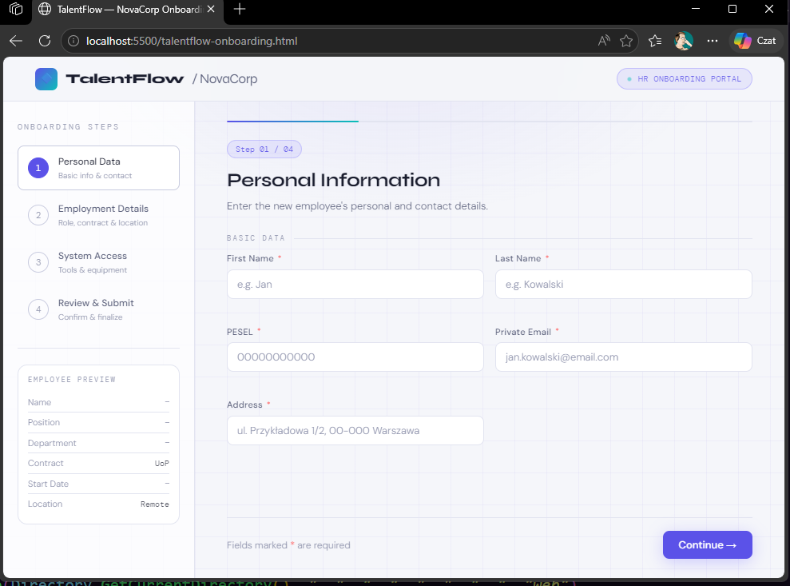
using Microsoft.Extensions.AI;
using ModelContextProtocol.Client;
using OpenAI;
using PlaywrightMcpDemo;
using System.ClientModel;
using System.Text;
using System.Text.Json;
const string OLLAMA_URL = "http://localhost:11434/v1";
const string OLLAMA_MODEL = "qwen3:14b";
const string DEMO_PAGE_URL = "http://localhost:5500/talentflow-onboarding.html";
const int SCENARIO_TIMEOUT_MINUTES = 20;
var scenario = (args.FirstOrDefault() ?? "A").ToUpperInvariant();
var headless = args.Contains("--headless");
var useClaude = args.Contains("--claude");
var titles = new Dictionary<string, string>
{
["A"] = "Scenariusz A - Autonomiczny Agent HR",
["B"] = "Scenariusz B - Generator Testow E2E",
["C"] = "Scenariusz C - Audytor Dostepnosci WCAG",
};
if (!titles.TryGetValue(scenario, out var title))
{
Console.WriteLine("Uzycie: dotnet run -- [A|B|C] [--headless] [--claude]");
return;
}
ConsoleUi.WriteBanner(title);
// ── Sprawdz strone demo ──────────────────────────────────────
Console.Write($"Sprawdzam {DEMO_PAGE_URL} ... ");
if (!await DemoPageChecker.IsAvailableAsync(DEMO_PAGE_URL))
{
ConsoleUi.WriteError("Strona demo niedostepna!");
Console.WriteLine("Uruchom serwer: npx serve wwwroot -l 5500");
Console.WriteLine(" lub: python -m http.server 5500 --directory wwwroot");
return;
}
ConsoleUi.WriteOk("strona dostepna");
// ── Playwright MCP ───────────────────────────────────────────
Console.WriteLine("Uruchamianie Playwright MCP Server...");
var (command, arguments) = PlaywrightProcessResolver.Resolve(headless);
Console.WriteLine($"Uruchamianie: {command} {string.Join(" ", arguments)}");
await PlaywrightProcessResolver.VerifyAsync(command, arguments);
var transport = new StdioClientTransport(new StdioClientTransportOptions
{
Name = "playwright",
Command = command,
Arguments = arguments,
});
await using var mcp = await McpClient.CreateAsync(transport);
IList<McpClientTool> mcpTools = await mcp.ListToolsAsync();
ConsoleUi.WriteOk($"Playwright MCP gotowy ({mcpTools.Count} narzedzi)");
// ── Model LLM ────────────────────────────────────────────────
var modelName = useClaude ? "claude-haiku-4-5 (Anthropic API)" : $"{OLLAMA_MODEL} (Ollama)";
IChatClient innerClient = useClaude
? new Anthropic.AnthropicClient()
.AsIChatClient("claude-haiku-4-5")
: new OpenAIClient(
new ApiKeyCredential("ollama"),
new OpenAIClientOptions { Endpoint = new Uri(OLLAMA_URL) })
.GetChatClient(OLLAMA_MODEL)
.AsIChatClient();
IChatClient chat = new ChatClientBuilder(innerClient)
.UseFunctionInvocation()
.Build();
ConsoleUi.WriteOk($"Model: {modelName}");
Console.WriteLine();
// ── Prompty ──────────────────────────────────────────────────
var (systemPrompt, userPrompt) = await PromptLoader.LoadAsync(scenario, DEMO_PAGE_URL);
// ── Agent ────────────────────────────────────────────────────
var messages = new List<ChatMessage>
{
new(ChatRole.System, systemPrompt),
new(ChatRole.User, userPrompt),
};
var chatOptions = new ChatOptions
{
Tools = [.. mcpTools],
MaxOutputTokens = 16384,
};
Console.WriteLine("Agent startuje...");
ConsoleUi.WriteSeparator();
Console.WriteLine();
var output = new StringBuilder();
var toolsUsed = 0;
var toolCalls = new List<string>();
const int MAX_CONTINUATIONS = 5;
using var cts = new CancellationTokenSource(TimeSpan.FromMinutes(SCENARIO_TIMEOUT_MINUTES));
ConsoleUi.ResetTimer();
try
{
for (int continuation = 0; continuation <= MAX_CONTINUATIONS; continuation++)
{
if (continuation > 0)
{
ConsoleUi.WriteColored($"\n--- kontynuacja {continuation}/{MAX_CONTINUATIONS} ---", ConsoleColor.DarkYellow);
messages.Add(new(ChatRole.User, "Kontynuuj od miejsca w ktorym skonczyles. Nie powtarzaj juz wykonanych krokow."));
}
var turnOutput = new StringBuilder();
await foreach (var update in chat.GetStreamingResponseAsync(messages, chatOptions, cts.Token))
{
if (update.Text is { Length: > 0 } text)
{
Console.Write(text);
output.Append(text);
turnOutput.Append(text);
}
foreach (var call in update.Contents.OfType<FunctionCallContent>())
{
toolsUsed++;
toolCalls.Add($"{call.Name} {JsonSerializer.Serialize(call.Arguments)}");
ConsoleUi.WriteToolCall(toolsUsed, call.Name, call.Arguments);
}
foreach (var result in update.Contents.OfType<FunctionResultContent>())
{
ConsoleUi.WriteToolResult(result.Result?.ToString());
}
}
var fullText2 = output.ToString();
var done = fullText2.Contains("EMP-") ||
fullText2.Contains("Onboarding Complete") ||
fullText2.Contains("Employee ID");
if (done)
break;
if (turnOutput.Length > 0)
messages.Add(new(ChatRole.Assistant, turnOutput.ToString()));
}
}
catch (OperationCanceledException)
{
Console.WriteLine();
ConsoleUi.WriteError($"Timeout! Agent przekroczyl limit {SCENARIO_TIMEOUT_MINUTES} minut.");
}
// ── Post-processing ──────────────────────────────────────────
Console.WriteLine();
Console.WriteLine();
ConsoleUi.WriteSeparator();
var fullText = output.ToString().Trim();
var resultsDir = ResultSaver.GetResultsDir();
var activeModel = useClaude ? "claude-haiku-4-5" : OLLAMA_MODEL;
switch (scenario)
{
case "A":
await ResultSaver.SaveScenarioA(fullText, toolCalls, toolsUsed, resultsDir, activeModel);
break;
case "B":
await ResultSaver.SaveScenarioB(fullText, toolsUsed, resultsDir, activeModel);
break;
case "C":
await ResultSaver.SaveScenarioC(fullText, toolsUsed, resultsDir, activeModel);
break;
}
Console.WriteLine();
Console.WriteLine($"Akcji MCP wykonanych: {toolsUsed}");
Console.WriteLine($"Czas: {ConsoleUi.Elapsed}");
ConsoleUi.WriteColored("Gotowe!", ConsoleColor.Green);
ConsoleUi.WaitForKey();
using System.Diagnostics;
using System.Runtime.InteropServices;
namespace PlaywrightMcpDemo;
public static class PlaywrightProcessResolver
{
public static (string Command, string[] Arguments) Resolve(bool headless)
{
if (!RuntimeInformation.IsOSPlatform(OSPlatform.Windows))
{
return ("npx", BuildArgs(headless));
}
var candidates = new[]
{
Path.Combine(Environment.GetFolderPath(Environment.SpecialFolder.ProgramFiles), "nodejs", "npx.cmd"),
Path.Combine(Environment.GetFolderPath(Environment.SpecialFolder.ProgramFilesX86), "nodejs", "npx.cmd"),
Path.Combine(Environment.GetFolderPath(Environment.SpecialFolder.ApplicationData), "nvm", "current", "npx.cmd"),
Path.Combine(Environment.GetFolderPath(Environment.SpecialFolder.ApplicationData), "nvm", "v24.14.0", "npx.cmd"),
Path.Combine(Environment.GetFolderPath(Environment.SpecialFolder.ApplicationData), "nvm", "v22.0.0", "npx.cmd"),
};
var npxCmd = candidates.FirstOrDefault(File.Exists);
if (npxCmd != null)
{
return (npxCmd, BuildArgs(headless));
}
var fallbackArgs = new List<string> { "/c", "npx" };
fallbackArgs.AddRange(BuildArgs(headless));
return ("cmd", fallbackArgs.ToArray());
}
public static async Task<bool> VerifyAsync(string command, string[] arguments)
{
try
{
var proc = new Process
{
StartInfo = new ProcessStartInfo
{
FileName = command,
Arguments = string.Join(" ", arguments.Select(a => a.Contains(' ') ? $"\"{a}\"" : a)),
RedirectStandardError = true,
UseShellExecute = false,
CreateNoWindow = true,
}
};
proc.Start();
await Task.Delay(500);
if (proc.HasExited)
{
var stderr = await proc.StandardError.ReadToEndAsync();
ConsoleUi.WriteError("Proces @playwright/mcp zakonczyl sie natychmiast!");
if (proc.ExitCode != 0)
ConsoleUi.WriteError($"Exit code: {proc.ExitCode}");
if (!string.IsNullOrWhiteSpace(stderr))
ConsoleUi.WriteError($"Stderr: {stderr}");
Console.WriteLine();
Console.WriteLine("Najczestsza przyczyna: brak przegladarek Playwright");
Console.WriteLine("Fix: npx playwright install chromium");
Console.WriteLine();
return false;
}
proc.Kill(entireProcessTree: true);
return true;
}
catch (Exception ex)
{
ConsoleUi.WriteError($"Nie mozna uruchomic npx: {ex.Message}");
return false;
}
}
private static string[] BuildArgs(bool headless)
{
return headless
? ["-y", "@playwright/mcp@latest", "--headless"]
: ["-y", "@playwright/mcp@latest"];
}
}
public static class PromptLoader
{
private const string PromptsDir = "prompts";
public static async Task<(string System, string User)> LoadAsync(string scenario, string demoPageUrl)
{
var key = scenario.ToLowerInvariant();
var systemPath = Path.Combine(PromptsDir, $"scenario-{key}-system.md");
var userPath = Path.Combine(PromptsDir, $"scenario-{key}-user.md");
if (!File.Exists(systemPath) || !File.Exists(userPath))
throw new FileNotFoundException($"Brak promptow dla scenariusza {scenario} w {PromptsDir}/");
var system = await File.ReadAllTextAsync(systemPath);
var user = await File.ReadAllTextAsync(userPath);
user = user.Replace("{{DEMO_PAGE_URL}}", demoPageUrl);
return (system, user);
}
}
using System.Text;
using System.Text.RegularExpressions;
namespace PlaywrightMcpDemo;
public static class ResultSaver
{
public static string GetResultsDir()
{
var timestamp = DateTime.Now.ToString("yyyy-MM-dd-HHmm");
var dir = Path.Combine("results", timestamp);
Directory.CreateDirectory(dir);
return dir;
}
public static async Task SaveScenarioA(string fullText, List<string> toolCalls, int toolsUsed, string resultsDir, string model)
{
var allCalls = string.Join(" ", toolCalls);
var nav = toolCalls.Any(c => c.Contains("browser_navigate"));
var step1 = (allCalls.Contains("Jan") || allCalls.Contains("firstName") || allCalls.Contains("e66"))
&& (allCalls.Contains("Kowalski") || allCalls.Contains("lastName") || allCalls.Contains("e70"))
&& (allCalls.Contains("@") || allCalls.Contains("email"));
var step2 = allCalls.Contains(".NET") || allCalls.Contains("position")
|| allCalls.Contains("e114") || allCalls.Contains("B2B")
|| allCalls.Contains("startDate") || allCalls.Contains("e140");
var step3 = allCalls.Contains("GitHub") || allCalls.Contains("ThinkPad")
|| allCalls.Contains("checkbox") || allCalls.Contains("Medicover")
|| allCalls.Contains("Datadog");
var step4 = allCalls.Contains("Complete") || allCalls.Contains("Submit")
|| fullText.Contains("Complete") || fullText.Contains("submit");
var empId = Regex.IsMatch(fullText + allCalls, @"EMP-\d+|NVC-\d+|employee.?id",
RegexOptions.IgnoreCase);
Console.WriteLine();
Console.WriteLine("Analiza przebiegu:");
ConsoleUi.WriteStep("Nawigacja do strony", nav);
ConsoleUi.WriteStep("Krok 1 - Personal Data", step1);
ConsoleUi.WriteStep("Krok 2 - Employment Details", step2);
ConsoleUi.WriteStep("Krok 3 - System Access", step3);
ConsoleUi.WriteStep("Krok 4 - Submit", step4);
ConsoleUi.WriteStep("Employee ID odczytany", empId);
var steps = new[] { nav, step1, step2, step3, step4, empId };
var passed = steps.Count(x => x);
Console.WriteLine();
ConsoleUi.WriteColored($"Wynik: {passed}/6 krokow zaliczonych",
passed == 6 ? ConsoleColor.Green :
passed >= 4 ? ConsoleColor.Yellow : ConsoleColor.Red);
var report = new StringBuilder();
report.AppendLine($"# Scenariusz A — Autonomiczny Agent HR");
report.AppendLine($"**Data:** {DateTime.Now:yyyy-MM-dd HH:mm}");
report.AppendLine($"**Model:** {model}");
report.AppendLine($"**Akcji MCP:** {toolsUsed}");
report.AppendLine();
report.AppendLine("## Wyniki");
report.AppendLine($"- Nawigacja: {(nav ? "✅" : "❌")}");
report.AppendLine($"- Krok 1 Personal Data: {(step1 ? "✅" : "❌")}");
report.AppendLine($"- Krok 2 Employment: {(step2 ? "✅" : "❌")}");
report.AppendLine($"- Krok 3 System Access: {(step3 ? "✅" : "❌")}");
report.AppendLine($"- Krok 4 Submit: {(step4 ? "✅" : "❌")}");
report.AppendLine($"- Employee ID: {(empId ? "✅" : "❌")}");
report.AppendLine();
report.AppendLine($"**Wynik: {passed}/6**");
report.AppendLine();
report.AppendLine("## Output agenta");
report.AppendLine("```");
report.AppendLine(fullText);
report.AppendLine("```");
report.AppendLine();
report.AppendLine("## Tool calls");
for (int i = 0; i < toolCalls.Count; i++)
report.AppendLine($"{i + 1}. {toolCalls[i]}");
var path = Path.Combine(resultsDir, "scenario-a-report.md");
await File.WriteAllTextAsync(path, report.ToString());
ConsoleUi.WriteColored($"Zapisano: {path}", ConsoleColor.Green);
}
public static async Task SaveScenarioB(string fullText, int toolsUsed, string resultsDir, string model)
{
var match = Regex.Match(fullText, @"(import \{.*)", RegexOptions.Singleline);
var code = match.Success ? match.Value : fullText;
code = Regex.Replace(code, @"```\w*\n?|```", "").Trim();
var specPath = Path.Combine(resultsDir, "onboarding.spec.ts");
await File.WriteAllTextAsync(specPath, code);
ConsoleUi.WriteColored($"Zapisano: {specPath}", ConsoleColor.Green);
Console.WriteLine(" Uruchom: npx playwright test onboarding.spec.ts --headed");
var report = new StringBuilder();
report.AppendLine($"# Scenariusz B — Generator Testow E2E");
report.AppendLine($"**Data:** {DateTime.Now:yyyy-MM-dd HH:mm}");
report.AppendLine($"**Model:** {model}");
report.AppendLine($"**Akcji MCP:** {toolsUsed}");
report.AppendLine();
report.AppendLine("## Wygenerowany test");
report.AppendLine("```typescript");
report.AppendLine(code);
report.AppendLine("```");
var reportPath = Path.Combine(resultsDir, "scenario-b-report.md");
await File.WriteAllTextAsync(reportPath, report.ToString());
ConsoleUi.WriteColored($"Zapisano: {reportPath}", ConsoleColor.Green);
}
public static async Task SaveScenarioC(string fullText, int toolsUsed, string resultsDir, string model)
{
var report = new StringBuilder();
report.AppendLine($"# Raport Dostepnosci WCAG 2.1 AA");
report.AppendLine($"**Aplikacja:** TalentFlow HR Onboarding Portal");
report.AppendLine($"**Data audytu:** {DateTime.Now:yyyy-MM-dd HH:mm}");
report.AppendLine($"**Audytor:** AI Agent ({model} via Playwright MCP)");
report.AppendLine($"**Standard:** WCAG 2.1 Level AA");
report.AppendLine();
report.AppendLine("---");
report.AppendLine();
report.AppendLine(fullText);
var path = Path.Combine(resultsDir, "accessibility-report.md");
await File.WriteAllTextAsync(path, report.ToString());
ConsoleUi.WriteColored($"Zapisano: {path}", ConsoleColor.Green);
Console.WriteLine();
Console.WriteLine("Znalezione problemy:");
ConsoleUi.WriteColored($" CRITICAL : {Count(fullText, "CRITICAL")}",
Count(fullText, "CRITICAL") > 0 ? ConsoleColor.Red : ConsoleColor.DarkGray);
ConsoleUi.WriteColored($" MAJOR : {Count(fullText, "MAJOR")}",
Count(fullText, "MAJOR") > 0 ? ConsoleColor.DarkYellow : ConsoleColor.DarkGray);
ConsoleUi.WriteColored($" MINOR : {Count(fullText, "MINOR")}", ConsoleColor.Yellow);
ConsoleUi.WriteColored($" OK : {Count(fullText, "OK")}", ConsoleColor.Green);
}
private static int Count(string s, string p) =>
(s.Length - s.Replace(p, "").Length) / p.Length;
}
Jestes certyfikowanym audytorem dostepnosci cyfrowej WCAG 2.1 AA.
Eksplorujesz strony przez Playwright MCP uzywajac browser_snapshot do analizy.
Dokumentujesz KAZDY problem z konkretna lokalizacja i poziomem WCAG.
Format problemow w raporcie:
CRITICAL - blokuje uzycie (WCAG A)
MAJOR - utrudnia znaczaco (WCAG AA)
MINOR - do poprawki w przyszlosci
OK - zgodne z WCAG
Przeprowadz pelny audyt WCAG 2.1 AA formularza: {{DEMO_PAGE_URL}}
Przejdz przez KAZDY krok (1 do 4) klikajac Continue i sprawdz:
PERCEIVABLE:
- Czy pola maja etykiety powiazane przez for/id lub aria-label?
- Czy ikony i przyciski bez tekstu maja aria-label?
- Czy kontrast tekstu spelnia minimum 4.5:1?
- Czy informacje nie sa przekazywane tylko kolorem?
OPERABLE:
- Czy wszystko jest dostepne klawiatura (Tab, Enter, Space)?
- Czy focus indicator jest widoczny?
- Czy checkboxy i radio buttons maja proper ARIA?
UNDERSTANDABLE:
- Czy wymagane pola sa wyraznie oznaczone?
- Czy lang jest ustawiony na elemencie html?
- Czy struktura naglowkow h1 do h3 jest logiczna?
ROBUST:
- Czy role ARIA sa poprawnie uzyte?
- Czy formularz ma poprawna semantyke HTML?
Wygeneruj raport Markdown z:
1. Podsumowaniem (liczba problemow per poziom)
2. Lista wszystkich problemow z rekomendacjami naprawy
3. Ocena koncowa w skali 0 do 100
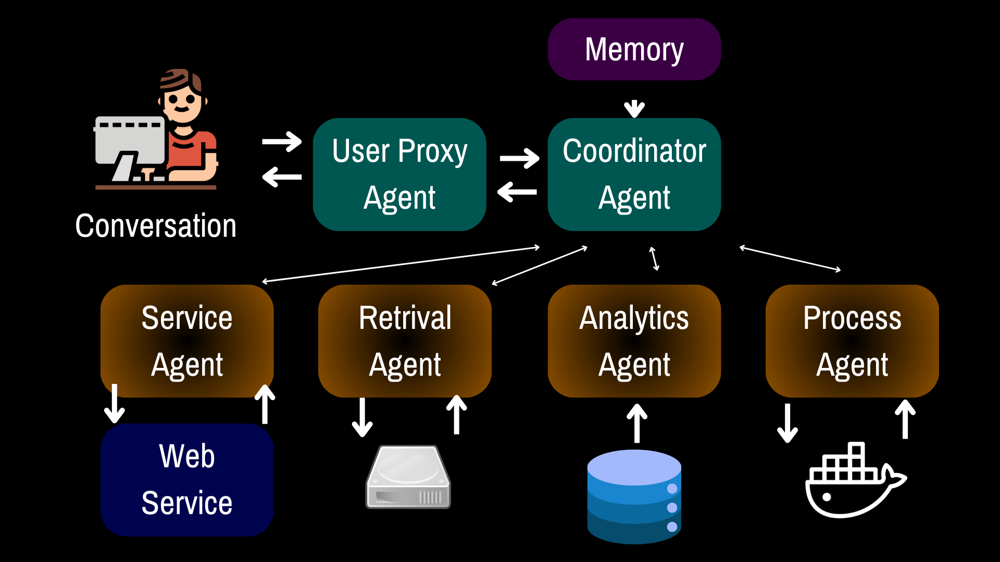
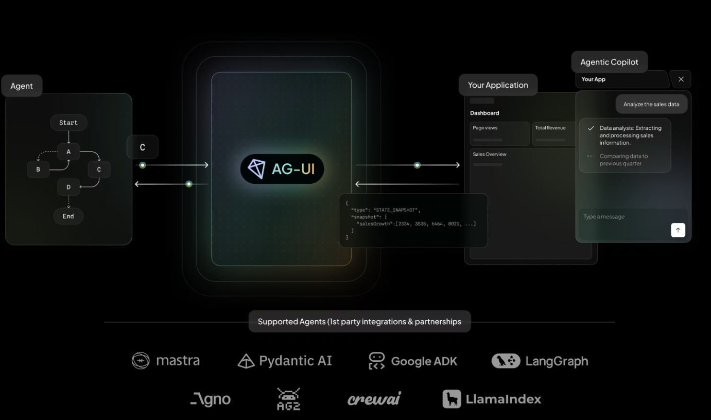
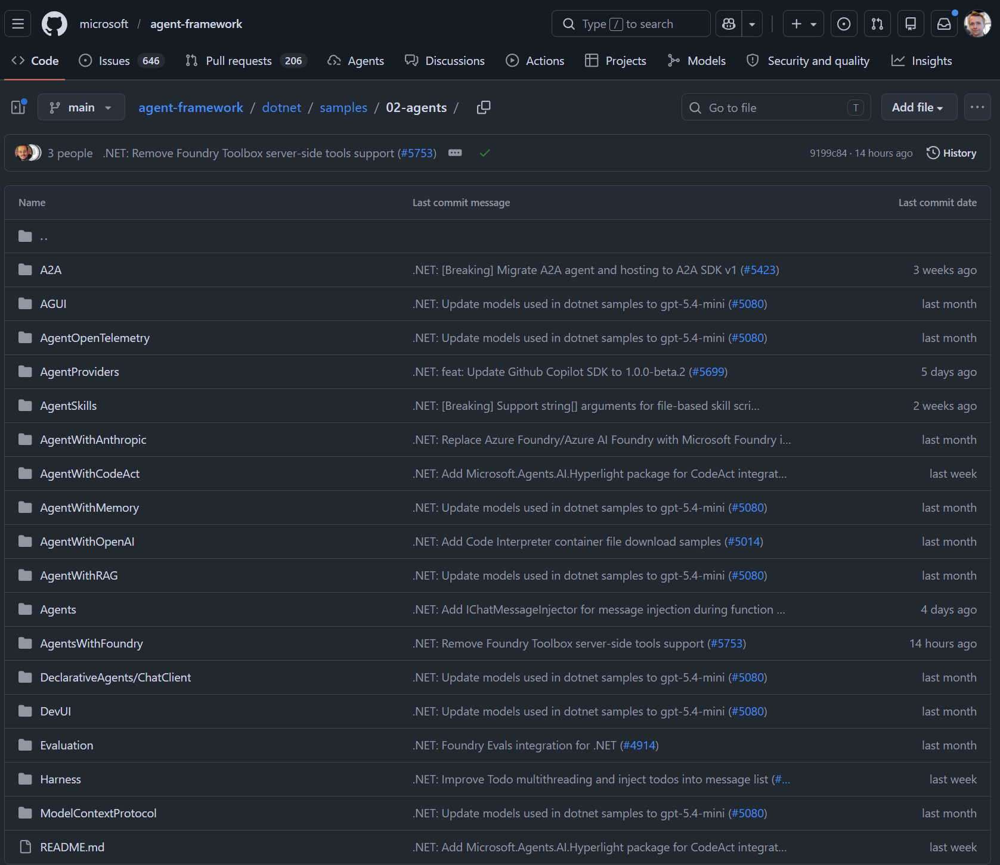
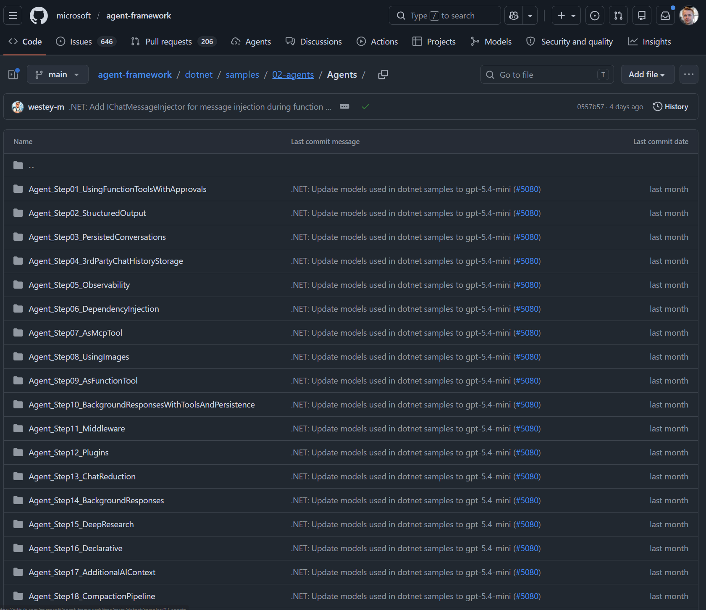
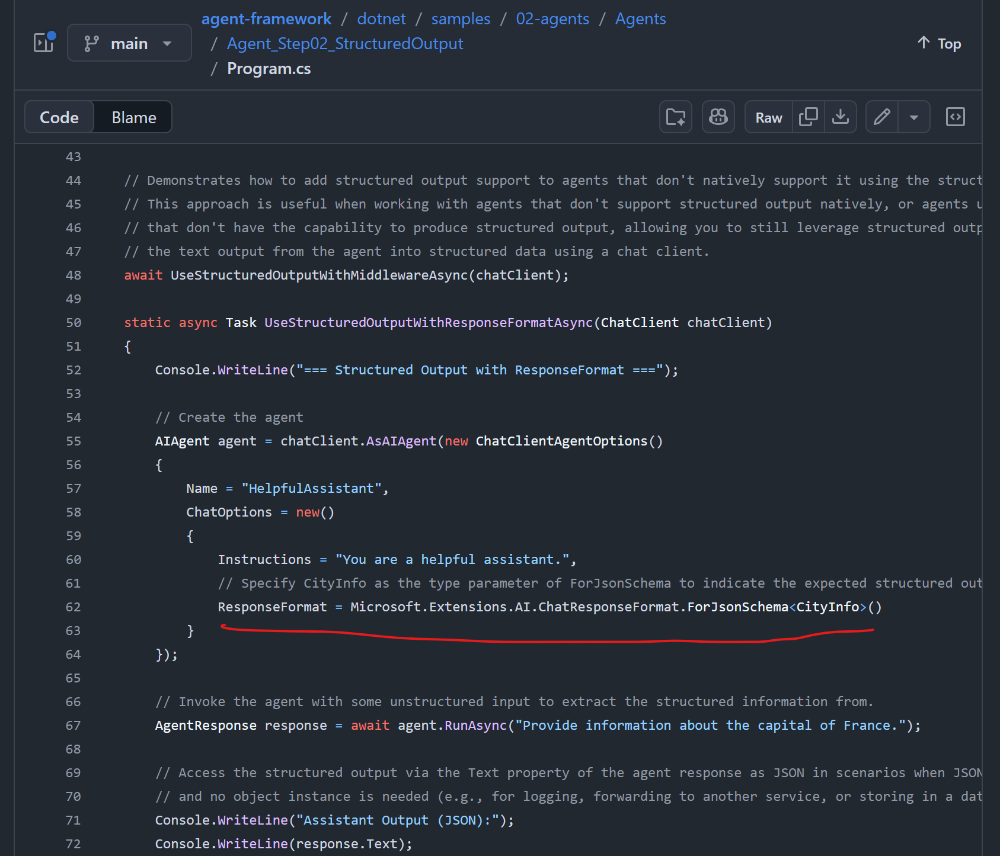
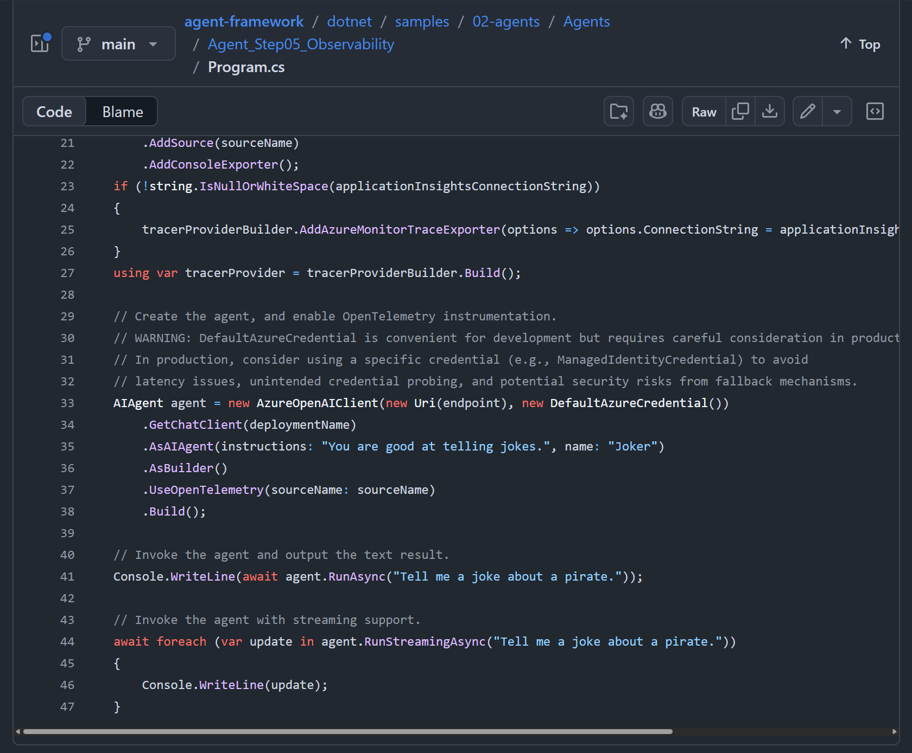
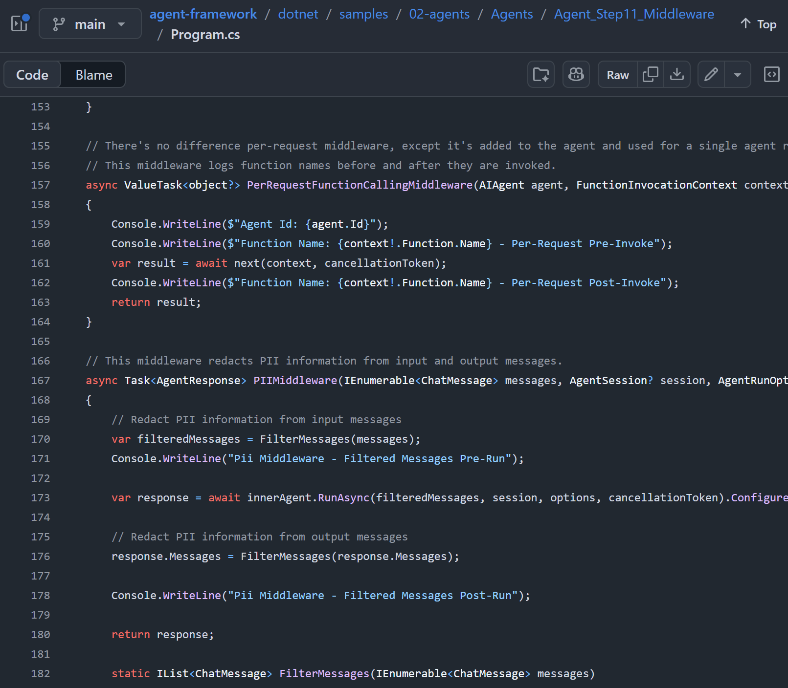
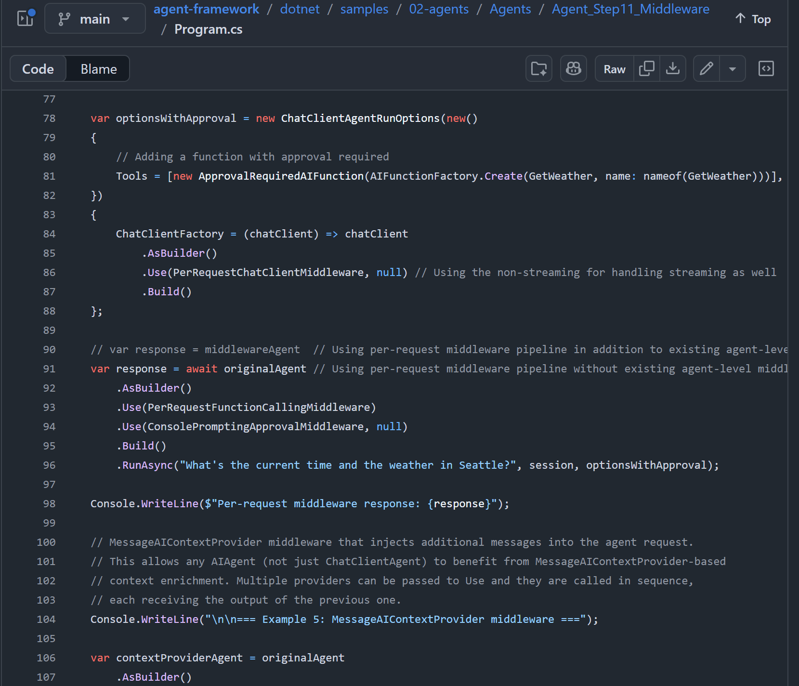
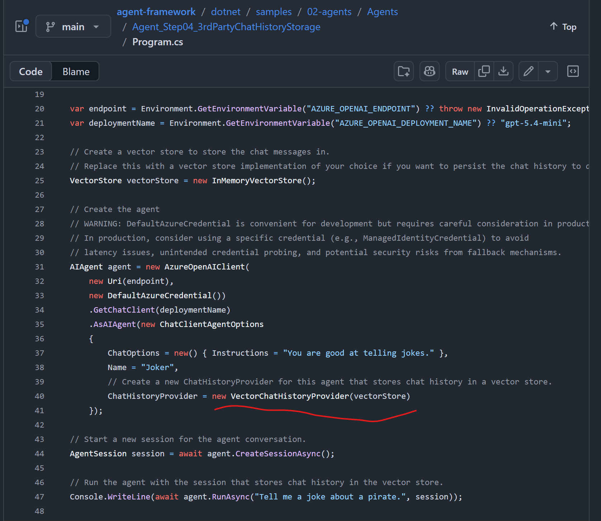
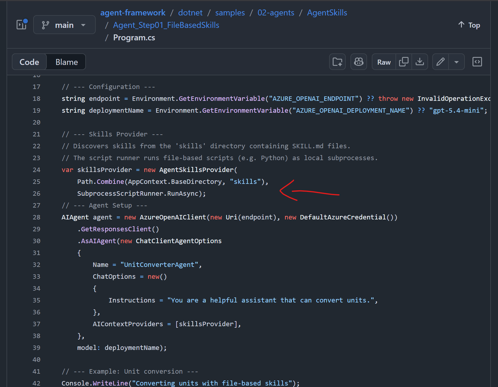